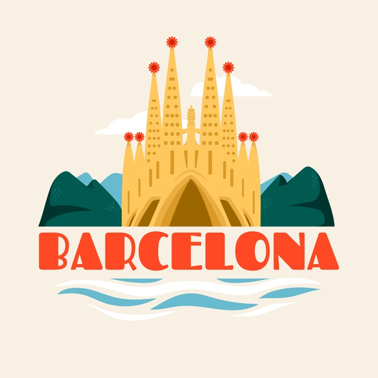

1. Informacion sobre la sostenibilidad
La sostenibilidad se refiere, por definición, a la satisfacción de las necesidades actuales sin comprometer la capacidad de las generaciones futuras de satisfacer las suyas, garantizando el equilibrio entre crecimiento económico, cuidado del medio ambiente y bienestar social. De aquí nace la idea del desarrollo sostenible, como aquel modo de progreso que mantiene ese delicado equilibrio hoy, sin poner en peligro los recursos del mañana. ¡No debemos olvidarnos del futuro! De aquí podemos extraer varios conceptos más, como la definición de sostenibilidad ambiental, que es aquella que pone el acento en preservar la biodiversidad sin tener que renunciar al progreso económico y social; la sostenibilidad económica, que se encarga de que las actividades que buscan la sostenibilidad ambiental y social sean rentables, y la sostenibilidad social, que busca la cohesión de la población y una estabilidad de la misma. En definitiva, la sostenibilidad y el desarrollo sostenible funcionan siguiendo el principio de que no se pueden agotar los recursos disponibles de forma indiscriminada, hay que proteger los medios naturales y todas las personas deben tener acceso a las mismas oportunidades.

2. Problemas en el mundo por no ser sostenible
Hay muchas cosas y lo voy a resumir a continuacion:
- Los problemas del medio ambiente sobre los pulmones del planeta: los bosques desaparecen por la deforestación.
- La sequía y la escasez de agua: los problemas medioambientales en el mundo afectan a los recursos naturales.
- Consumo abusivo: tus residuos agravan los problemas medioambientales globales.
- Los problemas del medio ambiente también dañan tu salud: contaminación del aire que respiras.
- Uno de los problemas del medio ambiente más graves: el cambio climático.
- Contaminación del mar: los problemas del medio ambiente y tu alimentación.
- Los problemas del medio ambiente ponen en riesgo la biodiversidad: peligro de extinción de especies.
3. Ciudades y Comunidades sostenibles
| Ciudades y Comunidades | Información |
|---|---|

|
|
|  | Igual que con muchos de los consejitos alimentarios en este blog, te exigen una apertura de la mente y voluntad de cambiar tus hábitos en la cocina. |
|
|
La ensalada verde es entonces una ensalada básica, saludable y fresca a la que podemos agregar ingredientes extra a nuestro gusto. |
|
|
Limpiamos y troceamos la verdura. Las cebollitas, cortadas por la mitad. |